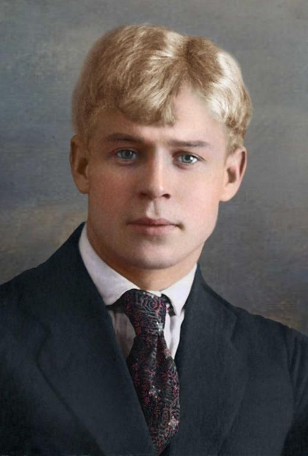

Зимнее утро
Мороз и солнце; день чудесный!
Еще ты дремлешь, друг прелестный —
Пора, красавица, проснись:
Открой сомкнуты негой взоры
Навстречу северной Авроры,
p>Звездою севера явись!
Вечор, ты помнишь, вьюга злилась,
На мутном небе мгла носилась;
Луна, как бледное пятно,
Сквозь тучи мрачные желтела,
И ты печальная сидела —
А нынче… погляди в окно:
Под голубыми небесами
Великолепными коврами,
Блестя на солнце, снег лежит;

Что это такое?
В этот лес завороженный,
По пушинкам серебра,
Я с винтовкой заряженной
На охоту шел вчера.
По дорожке чистой, гладкой
Я прошел, не наследил…
Кто ж катался здесь украдкой?
Кто здесь падал и ходил?
Подойду, взгляну поближе:
Хрупкий снег изломан весь.
Здесь вот когти, дальше — лыжи…
Кто-то странный бегал здесь.
Кабы твердо знал я тайну
Заколдованным речам,
Я узнал бы хоть случайно,
Кто здесь бродит по ночам.
Из-за елки бы высокой
Подсмотрел я на кругу:
Кто глубокий след далекий
Оставляет на снегу?..